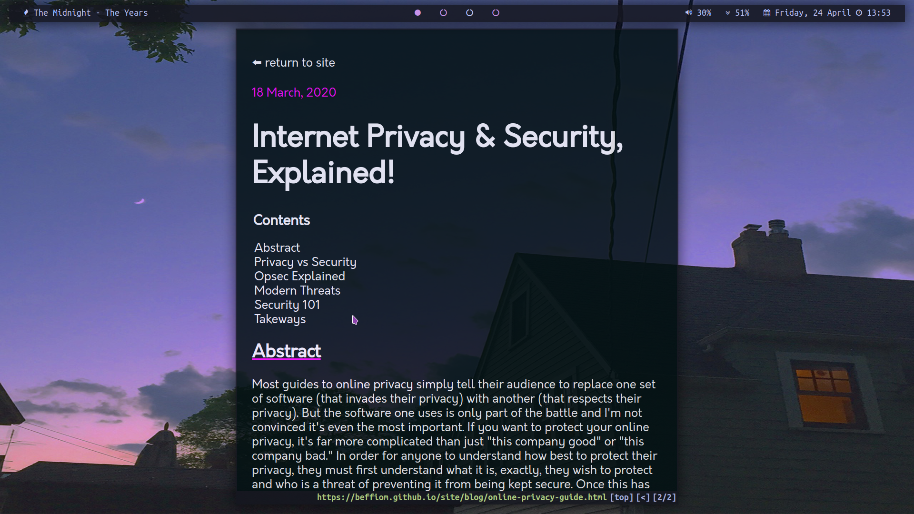

my dotfiles

desktop
- bspwm
a simple and lightweight window manager configured in bash
- neovim
modern vim, a terminal-based and keyboard-based text editor
- qutebrowser
vim-based web browser
- mpv
a simple and lightweight but highly configurable video player
- youtube-dl
download videos from youtube (and other sites) from the terminal (or gui)
- invidio.us
a front-end youtube proxy that displays youtube content with no google connections and no javascript
- mastodon
like Twitter but decentralized and open source
- keepmenu
manages a keepass database using dmenu as a front end
- ncmpcpp
a TUI frontend to mpd
- cmatrix
displays neat-looking matrix-style scrolling ciphers in the terminal
- castero
a configurable TUI client to listen to podcasts and save them for offline playback
mobile
what i dont use
- streaming services
- cloud services
- social media (except mastodon and linkedin of course)
- proprietary software in general